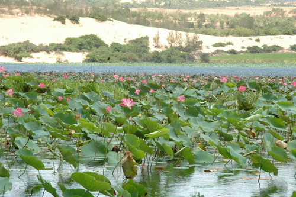
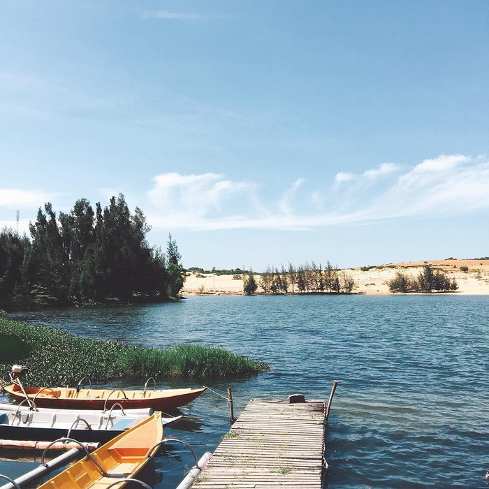
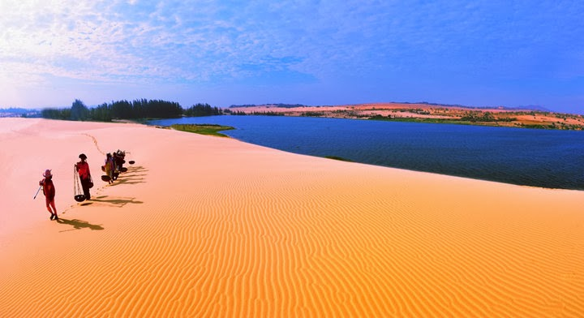

ĐC:thôn Hồng Lâm, xã Hòa Thắng, huyện Bắc Bình, tỉnh Bình Thuận. Đồi cát trắng hay còn gọi là Bàu Trắng là điểm thu hút du lịch thứ hai tại Mũi Né sau biển. Với kích thước lớn nằm cách Mũi Né 20 km theo hướng đông bắc, Bàu Trắng được ví như những cồn cát tại sa mạc Sahara. Cát nơi đây chuyển màu từ vàng sang trắng tinh khiết (cát đỏ có thể được tìm thấy ở phía nam một số làng Mũi Né).
Khu vực Bàu Trắng gồm ba hồ: Bàu Ông (Gentleman Lake), Bàu Bà (Lady Lake) lớn nhất, Bàu Xoài (Mango Lake) nhỏ nhất, và một số ao. Bàu Bà diện tích 70 ha, nơi rộng nhất là 500 m, độ sâu trung bình là 5 m, nơi sâu nhất là 19 m vào mùa mưa. Tổng lượng nước chứa ở 2 hồ là 12.131.900 m3. Khu vực sâu nhất của hồ được bao phủ bởi hàng trăm bông sen nở rộ cả một vùng hồ khi trời vào hạ, tô thêm nét đẹp vùng cát trắng.
Theo truyền thuyết nơi đây là một hồ lớn, sau người dân đắp đập cát chạy vắt ngang hồ để đi qua. Hồ lớn này từ đó bị chia thành hai phần: tiểu hồ và đại hồ. Do “Bàu” trong tiếng địa phương nghĩa là “hồ” nên từ rất lâu, người địa phương đã gọi là tiểu hồ là Bàu. Năm 1867, khi Nguyễn Thông đi ngang qua đây, thấy cảnh đẹp của Bàu Trắng mà cụ gọi là “Bạch Hồ”. “Bạch Hồ” bắt đầu xuất hiện trong thơ của Nguyễn Thông và cũng từ đó trở thành tên mà giới thi nhân gán cho Bàu Trắng.
